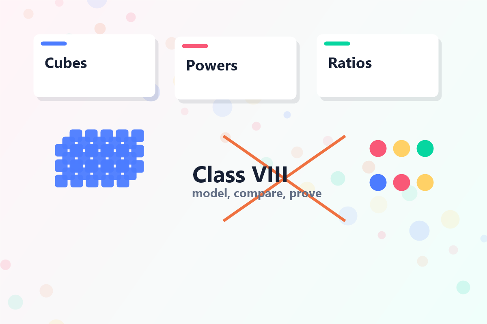
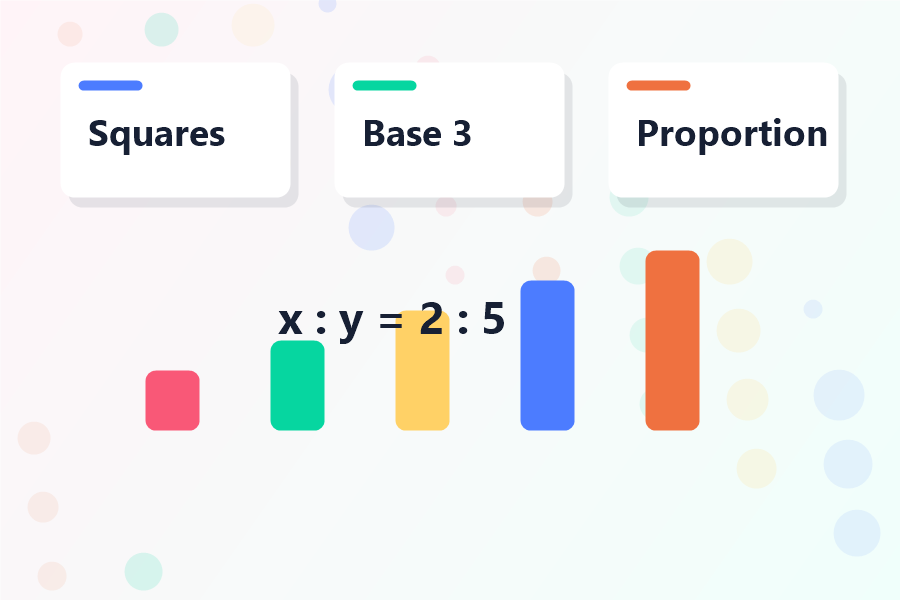

Decompose
Split a big task into smaller jobs you can solve one by one.
Welcome, systems thinker!
Class VIII Computational Thinking asks you to compare number systems, reason with powers, classify quadrilaterals, test divisibility, distribute resources, and preserve proportions.

Split a big task into smaller jobs you can solve one by one.
Notice what repeats in numbers, shapes, data, and decisions.
Keep the details that matter and ignore distracting noise.
Write clear steps, check them, and improve them when needed.
Class VIII learning path
These modules follow the Computational Thinking chapters of the CBSE Class VIII student handbook: squares and cubes, powers, number systems, quadrilaterals, divisibility puzzles, distribution expressions, and proportional reasoning.
